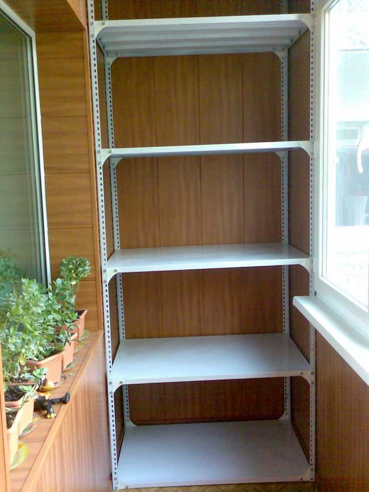

Балконы
2020.11.20 17:07
Детская Кухня Гардеробная Гостиная Балкон Шкафы-купе Камины
Балконы
Остекление Отделка Регулировка балконной пластиковой двери Отделка балкона вагонкой Балконы Отделка лоджии пластиковыми панелями Балконы Кованые балконы Как сделать балкон своими руками Панорамное остекление балкона Настенная сушилка для белья на балкон Французское остекление балкона Балконы Балкон в частном доме Остекление балконов в хрущевке Потолочная сушилка на балкон для белья Балконы Как сделать теплый пол на балконе Балконы Как выбрать плитку на пол на балкон Лоджия Шкаф на балкон своими руками Раздвижные окна на балкон Раздвижные двери на балкон Балконы Идеи дизайна отделки балкона Парник для балкона Расширение балкона Балконы Отделка балкона внутри Балконы Подоконник на балконе Как обшить балкон своими руками Остекление и отделка балконов Цветы на балконе Как обшить балкон Балконы Пол на лоджии Отделка балкона сайдингом Стеллаж на балкон Балконы Окна на лоджию Балконы Ремонт балкона Мебель на балкон Погреб на балконе Встроенный шкаф на балкон Ремонт крыши балкона Балконы Утепление лоджии своими руками Отделка балкона Отделка балкона деревом Балконы Как сделать мангал на балконе Балконы Утепление лоджии пеноплексом Внешняя отделка балкона Как выбрать и оформить пластиковую дверь на балкон Остекление балкона с выносом Шторы на балкон своими руками Балконы Отделка лоджии своими руками Потолки на балконе Шкаф на балкон Балконы Кабинет на балконе Балконы Отделка балкона МДФ-панелями Французский балкон Остекление балкона деревом Стеллаж на балкон своими руками Обустройство балконов Балконы Шторы на балкон Спальня на балконе Теплый пол на балконе своими руками Балконы Дизайн с цветами на балконе Балконы Отделка балкона гипсокартоном Разновидности лоджий и балконов Жалюзи на балкон Варианты офрмления балкона в различных стилях Обустройство лоджии Балконы Отделка лоджии вагонкой Дизайн кухни на лоджии Дизайн кабинета на балконе Балконы Полки на балконе Балконы Сушилка для белья на балкон Цветы для балкона Откидной столик на балкон Стол на балконе Отопление лоджии Балконы Дизайн балкона, совмещенного с кухней Объединение балкона с комнатой Перила на балкон Балконы Дизайн балкона в хрущевке Балконы Качественное покрытие для потолка на лоджии Барная стойка на балконе Безрамное остекление балконов Как сделать из балкона комнату Остекление балкона своими руками Балконы Балкон, совмещенный с кухней Отделка балкона пластиковыми панелями Рулонные шторы на балкон Балконы Остекление балконов с крышей Балконы Холодное остекление балконов Шторы на лоджию Теплое остекление балкона Красивые балконы: 20 крутых идей Присоединение лоджии к комнате Балконы Балконы в хрущевке : отделка и интересные идеи Дизайн лоджии Дизайн маленького балкона Балконы Красивая отделка лоджии Балконы Дизайн лоджии, совмещенной с комнатой Остекление балконов Алюминиевое остекление балконов Кухня Детская Спальня Гардеробная Гостиная Камины Балкон Мебель Шкафы-купе Двери Текстиль для дома Ландшафтный дизайн О проекте Реклама на сайте Мобильная версия Вход / РегистрацияКонтакты редакции:
info@dekoriko.ru
Журнал о дизайне Dekoriko.Ru
Все права защищены, 14+
Время работы:
пн-пт, 9:00–18:00
Запрещено использование любых материалов без нашего предварительного письменного согласия.
